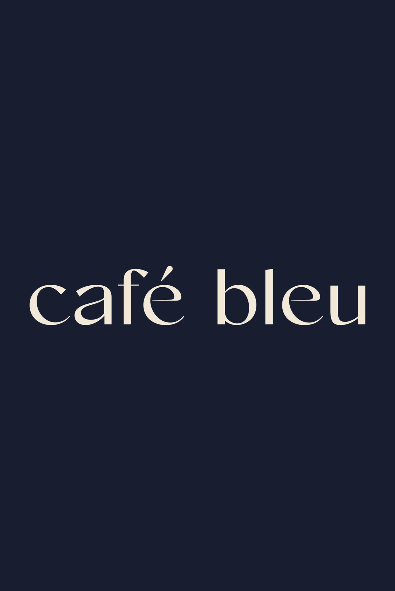
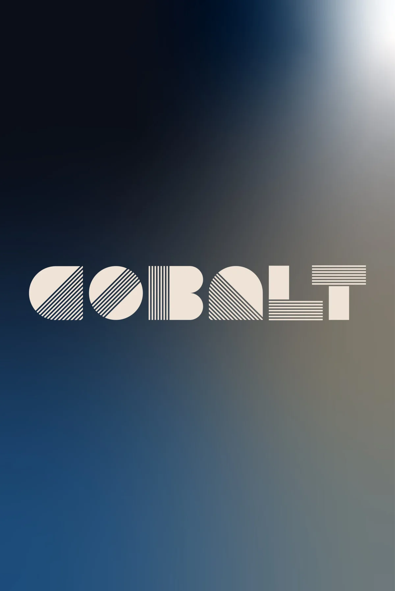
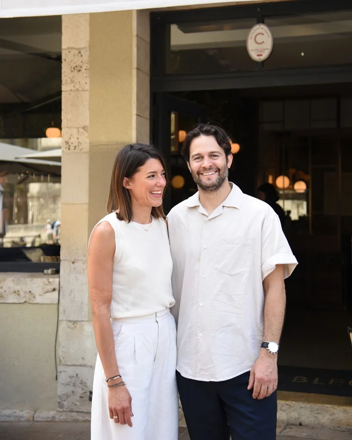
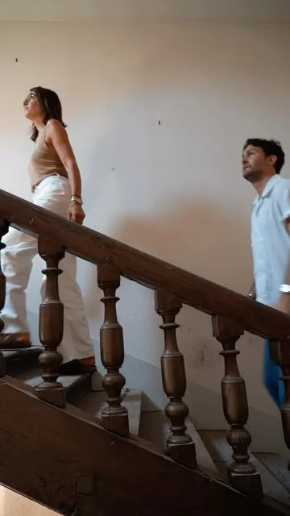

XVe
L'hôtel de Champrond
Une grande maison à façade de brique, bâtie à la fin du XVe ou au début du XVIe siècle, avec son portail en arc surbaissé portant le blason au griffon de la famille.

XVe — 2026Alba · Chartres
« Un lieu chargé d'histoire, que certains d'entre vous connaissent déjà… et qui s'apprête à se réinventer complètement. »
Après le Café Bleu, au pied de la cathédrale, et Cobalt, rue Fulbert, Fannie et Antoine Bréthereau ouvrent le troisième chapitre de Bleu Collection : une brasserie italienne, pensée autour de ce qu'ils aiment, une belle cuisine, des grandes tablées et le plaisir de recevoir.
« Alba », c'est l'aube en italien. Le premier matin d'une nouvelle histoire, dans l'une des plus vieilles maisons de la ville.
Une grande maison à façade de brique, bâtie à la fin du XVe ou au début du XVIe siècle, avec son portail en arc surbaissé portant le blason au griffon de la famille.

La maison appartient au président Jean de Champrond, haut magistrat du siècle de Louis XIV, si célèbre pour son avarice qu'il aurait inspiré Harpagon à Molière. On raconte qu'alité, il se serait levé pour éteindre la chandelle. Chez Alba, on promet l'inverse : la générosité.

Au printemps, Bleu Collection reprend le lieu, longtemps connu des Chartrains sous le nom du Molière. Les salles sont vidées lors d'une vente organisée avec Ivoire Chartres, puis les artisans se mettent au travail.

Tissus, vaisselle, lumière : la maison change de visage tout en gardant son âme, ses parquets, ses boiseries et sa hauteur sous plafond. En septembre, le nom se dévoile : ALBA.

Les premiers tiramisù sortent de la cuisine en avant-première. Il ne reste plus qu'à ouvrir les portes et vous accueillir. Ci vediamo presto !
—Ce qui nous anime
Des grandes tablées, des plats au centre, et le goût de recevoir comme à la maison.
Une cuisine italienne généreuse, inspirée des racines du chef et des beaux produits.
Un déjeuner sur le pouce, un aperitivo dans la cour ou un dîner de fête : chaque visite doit compter.
—La famille

1 Cloître Notre-Dame

1 rue Fulbert
26 place Jean-Moulin
—L'équipe

